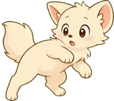

It looks around
It knows where your windows are, how long you've been idle and whether your camera or mic is on. That's all it gets. No screenshots, and it never reads what's inside your apps.
It naps on your windows, sits on whatever you're reading and ignores you when you call. Everything stays on your computer, and it never touches your mouse or keyboard.
Hover to pet it. Click if you must.Tap to poke it. Tap the mug to put it back.
01 / how it thinks
Under the fur it's a small loop that runs all day. You can read every line of it.
It knows where your windows are, how long you've been idle and whether your camera or mic is on. That's all it gets. No screenshots, and it never reads what's inside your apps.
Every 20 to 60 seconds a brain picks what it wants next, from a short menu. A governor checks every pick, so a meeting or a fullscreen video stays off limits whatever the brain thinks.
It walks over, sits down, holds the pose and takes its time before the next idea, like an animal does. Pet it, poke it, pick it up or shoo it, and it reacts in its own way.
02 / the cast
Three cats, a fox, a raccoon, two dogs, a rabbit and a squirrel. Same app, very different manners. Hover one to pet it.
The classic orange cat. Lazy, proud, and sits on your work.
you looked busy. fixed that.
A black cat with yellow eyes who follows you and pretends it doesn't.
not following you. we're just going the same way.
A fluffy white cat. Royal, aloof, and very much above this.
you may speak. i may not answer.
A cream-colored fox. Curious about everything, trouble about most of it.
i have decided this is my den now.
A raccoon in a mask. Takes things, then acts surprised.
it was already falling. i helped.
A golden pup who is thrilled you exist. Hard to shoo, impossible to stay mad at.
you're back!! you were gone for a minute!!
A tiny black-and-tan chihuahua. Shivers, yaps at everything, and follows you like it's its job.
this window is mine. i will fight you for it.
A brown bunny with a cotton tail. Quiet, easily startled, and does happy little jumps when nobody's looking.
binky. you didn't see that.
A red squirrel with a huge tail. Can't sit still, hides things, and tells you off about it.
chk chk chk. i'm telling you off.
03 / what it does
Hover to pet and it purrs, for a while. Click and it reacts, a little less patient each time. Drag it to pick it up, shake it to shoo it. Right-click it for a menu: a treat, its toy, zoomies, a nap. A treat hangs at your pointer and it begs under it until you let go. The dog is thrilled by all of it.

Window tops are shelves and the Dock is a bed. Once in a while one of them is a litter box too (click the mess to clean it up). It walks across every display you have.
In a call, during a full-screen video or slides, or while you share your screen, it stays out of the way. ⌘⌥⇧P sends it off right now.
It can't type, click, scroll or move your cursor. The build fails if code that could do any of that ever shows up.
No account, no analytics, no cloud and no screenshots. Out of the box it asks for no permissions at all, on macOS or Windows. The one thing it fetches on its own is an update check from GitHub every few hours, and a new version installs itself while you're away from the computer (you can turn that off). If you turn on the local model it offers to download that too, after you say yes.
A rules brain runs it out of the box. Turn on a small model through Ollama and it plans what the cat does next and gives it thoughts in a little bubble. It runs on your computer, gets no tools and can only choose from the menu it's handed, so it can be odd but never out of line.
04 / get it
A normal app. On a Mac it lives in your menu bar, on Windows by the clock.
Then it lives in the menu bar. Pick a character, set the chaos level, turn the local model on or off and pick its model, start it at login. A tick shows what's on. To remove it, drag it to the Trash.
Paste this in Terminal. It downloads the same app, checks it against the checksum on the release, puts it in Applications and starts it. macOS only questions apps a browser downloaded, so there's no Open Anyway step. Run it again any time to update.
$ curl -fsSL https://raw.githubusercontent.com/abozaralizadeh/Felinquent/main/scripts/get-mac.sh | bashYou need Homebrew. The script installs Node and Rust if they're missing, builds the app and puts it in Applications. Run it again any time to update.
$ git clone https://github.com/abozaralizadeh/Felinquent
$ cd Felinquent
$ bash scripts/install-mac.sh--with-model also sets up the small local model, under 1 GB. --login starts it when you log in.
The cat stands on your taskbar and its menu is the icon by the clock. Panic is Ctrl+Alt+Shift+P. To remove it, use Settings › Apps.
Or paste this in PowerShell. It downloads the same installer, checks it against the checksum on the release and installs it, with no SmartScreen question. Run it again any time to update.
> irm https://raw.githubusercontent.com/abozaralizadeh/Felinquent/main/scripts/get-windows.ps1 | iexThe playground runs the same cat on pretend windows, in any browser on any OS. You need Node.js 22 or newer.
$ git clone https://github.com/abozaralizadeh/Felinquent
$ cd Felinquent
$ npm install
$ npm run devThen open localhost:5173, drag the windows around and try the Meeting and Panic switches.
The full guide is in docs/INSTALL.md.
05 / the honest bit
No. It keeps you company and gets in your way a little, on purpose. It never does anything that could lose your work.
No. It never takes screenshots or records anything. It knows where your windows are and how big they are, how long you've been idle and whether the camera or mic is in use. That's the whole list.
No. The rules brain does the whole job. The model is an extra: gemma3:1b through Ollama, a download of about 815 MB (plus Ollama if you don't have it: about 230 MB on a Mac, 1.7 GB on Windows) that runs on your own computer. Turn it on in the menu and the app offers to set both up. It unloads itself while the cat naps. Want a bigger one? Pull any model with Ollama and pick it in the menu's Model list.
If your computer is short on memory, or has no graphics chip Ollama can use, leave it out. You won't miss much.
It's built to stay light. Reading the window list four times a second costs about 6 ms of work per second on the test Mac. Nobody has run the whole app for a full day and measured it yet, so take that as a first number.
It's an early working prototype. The brain, the rules and the animation are built and tested, and the Mac app runs on real windows. You can download it now, but it isn't signed with an Apple Developer ID yet, so macOS asks you to confirm it the first time. You'll find rough edges.
Windows 10 and 11 (64-bit) since 0.1.12: download it above. There's no Linux desktop version. The browser playground runs anywhere.
Personal and other non-commercial use is free. The code is under PolyForm Noncommercial 1.0.0 and the art under CC BY-NC 4.0, so for anything commercial, ask first.
The characters are AI-assisted drawings. Everything they do is animated in code from those drawings. The walk, for example, is rigged from one standing pose, so the paws stay planted.